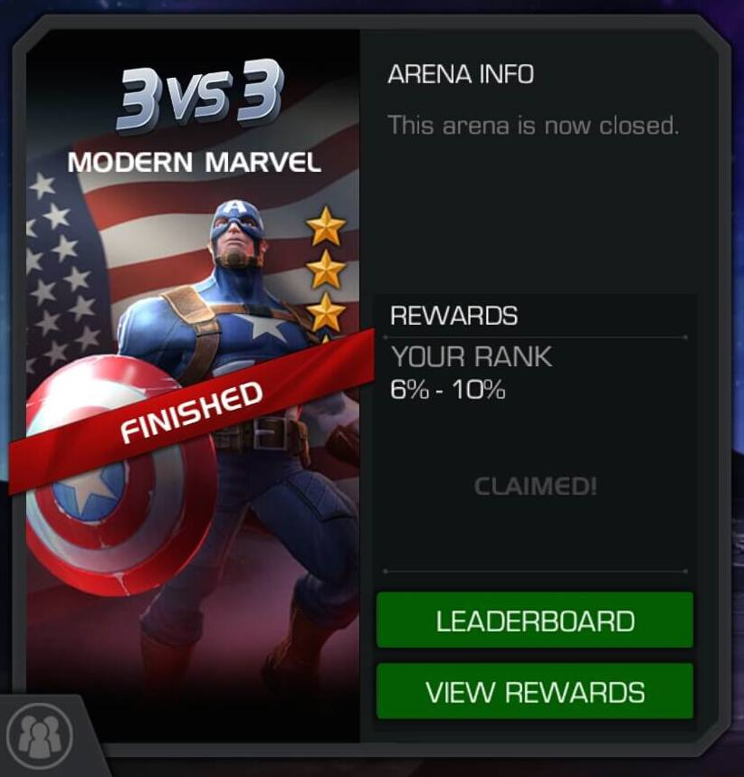

Cap WWII 4* Arena
Cap WWII - Featured (Top 400)

In Marvel Contest of Champions summoners compete in four star arenas for basic and featured champions. Featured champions are awarded to the top 400 scorers. Basic champions are awarded to the top 1-5% of scorers, excluding the top 400.
Above you can see the number of points that were needed to win either the basic or featured champs.